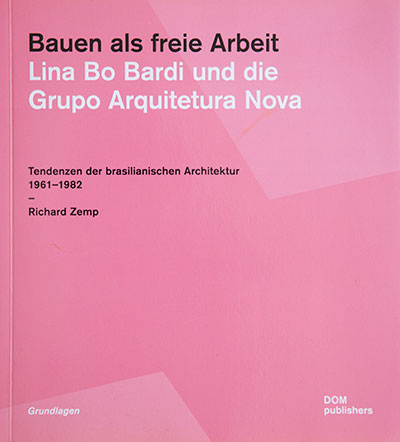
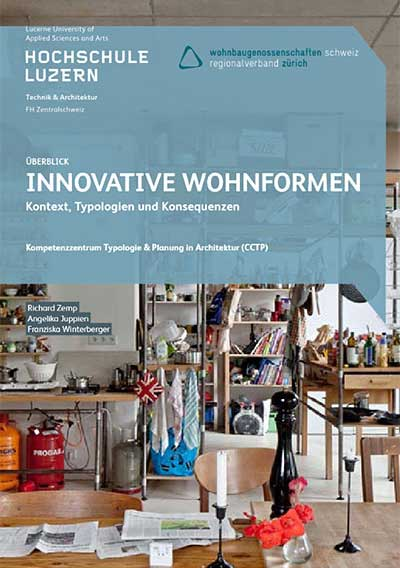

Juppien, Angelika & Zemp, Richard:
Atlas des Dazwischenwohnens – Wohnbedürfnisse jenseits der Türschwelle
Park Books. Zürich 2022

Zemp, Richard:
Bauen als freie Arbeit. Lina Bo Bardi und die Grupo Arquitetura Nova
- Tendenzen der brasilianischen Architektur 1961 – 1982. Dom Publishers. Zürich. 2021
Juppien, Angelika & Zemp, Richard:
Das Vokabular des Zwischenraums – Gestaltungsmöglichkeiten von Rückzug und Interaktion in dichten Wohngebieten
Park Books Zürich 2019

Zemp, Richard & Juppien, Angelika (2019).
Innovative Wohnformen. Kontext, Typologien und Konsequenzen
Wohnbaugenossenschaften Schweiz – Regionalverband Zürich, Horw.
Zemp Nascimento, Andréa (2014).
A criança e o arquiteto: quem aprende com quem?
São Paulo: Annablume; FAPESP. ISBN: 978-85-391-0655-4 („Das Kind und der Architekt: wer lernt von wem?“)